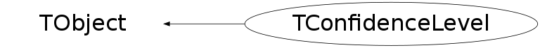

class TConfidenceLevel: public TObject
TConfidenceLevel Class to compute 95% CL limits
Function Members (Methods)
public:
| TConfidenceLevel() | |
| TConfidenceLevel(const TConfidenceLevel&) | |
| TConfidenceLevel(Int_t mc, bool onesided = kTRUE) | |
| virtual | ~TConfidenceLevel() |
| void | TObject::AbstractMethod(const char* method) const |
| virtual void | TObject::AppendPad(Option_t* option = "") |
| virtual void | TObject::Browse(TBrowser* b) |
| static TClass* | Class() |
| virtual const char* | TObject::ClassName() const |
| Double_t | CLb(bool use_sMC = kFALSE) const |
| virtual void | TObject::Clear(Option_t* = "") |
| virtual TObject* | TObject::Clone(const char* newname = "") const |
| Double_t | CLs(bool use_sMC = kFALSE) const |
| Double_t | CLsb(bool use_sMC = kFALSE) const |
| virtual Int_t | TObject::Compare(const TObject* obj) const |
| virtual void | TObject::Copy(TObject& object) const |
| virtual void | TObject::Delete(Option_t* option = "")MENU |
| virtual Int_t | TObject::DistancetoPrimitive(Int_t px, Int_t py) |
| virtual void | Draw(Option_t* option = "") |
| virtual void | TObject::DrawClass() constMENU |
| virtual TObject* | TObject::DrawClone(Option_t* option = "") constMENU |
| virtual void | TObject::Dump() constMENU |
| virtual void | TObject::Error(const char* method, const char* msgfmt) const |
| virtual void | TObject::Execute(const char* method, const char* params, Int_t* error = 0) |
| virtual void | TObject::Execute(TMethod* method, TObjArray* params, Int_t* error = 0) |
| virtual void | TObject::ExecuteEvent(Int_t event, Int_t px, Int_t py) |
| virtual void | TObject::Fatal(const char* method, const char* msgfmt) const |
| virtual TObject* | TObject::FindObject(const char* name) const |
| virtual TObject* | TObject::FindObject(const TObject* obj) const |
| Double_t | Get3sProbability() const |
| Double_t | Get5sProbability() const |
| Double_t | GetAverageCLs() const |
| Double_t | GetAverageCLsb() const |
| Double_t | GetBtot() const |
| virtual Option_t* | TObject::GetDrawOption() const |
| static Long_t | TObject::GetDtorOnly() |
| Int_t | GetDtot() const |
| Double_t | GetExpectedCLb_b(Int_t sigma = 0) const |
| Double_t | GetExpectedCLb_sb(Int_t sigma = 0) const |
| Double_t | GetExpectedCLs_b(Int_t sigma = 0) const |
| Double_t | GetExpectedCLsb_b(Int_t sigma = 0) const |
| Double_t | GetExpectedStatistic_b(Int_t sigma = 0) const |
| Double_t | GetExpectedStatistic_sb(Int_t sigma = 0) const |
| virtual const char* | TObject::GetIconName() const |
| virtual const char* | TObject::GetName() const |
| virtual char* | TObject::GetObjectInfo(Int_t px, Int_t py) const |
| static Bool_t | TObject::GetObjectStat() |
| virtual Option_t* | TObject::GetOption() const |
| Double_t | GetStatistic() const |
| Double_t | GetStot() const |
| virtual const char* | TObject::GetTitle() const |
| virtual UInt_t | TObject::GetUniqueID() const |
| virtual Bool_t | TObject::HandleTimer(TTimer* timer) |
| virtual ULong_t | TObject::Hash() const |
| virtual void | TObject::Info(const char* method, const char* msgfmt) const |
| virtual Bool_t | TObject::InheritsFrom(const char* classname) const |
| virtual Bool_t | TObject::InheritsFrom(const TClass* cl) const |
| virtual void | TObject::Inspect() constMENU |
| void | TObject::InvertBit(UInt_t f) |
| virtual TClass* | IsA() const |
| virtual Bool_t | TObject::IsEqual(const TObject* obj) const |
| virtual Bool_t | TObject::IsFolder() const |
| Bool_t | TObject::IsOnHeap() const |
| virtual Bool_t | TObject::IsSortable() const |
| Bool_t | TObject::IsZombie() const |
| virtual void | TObject::ls(Option_t* option = "") const |
| void | TObject::MayNotUse(const char* method) const |
| virtual Bool_t | TObject::Notify() |
| void | TObject::Obsolete(const char* method, const char* asOfVers, const char* removedFromVers) const |
| static void | TObject::operator delete(void* ptr) |
| static void | TObject::operator delete(void* ptr, void* vp) |
| static void | TObject::operator delete[](void* ptr) |
| static void | TObject::operator delete[](void* ptr, void* vp) |
| void* | TObject::operator new(size_t sz) |
| void* | TObject::operator new(size_t sz, void* vp) |
| void* | TObject::operator new[](size_t sz) |
| void* | TObject::operator new[](size_t sz, void* vp) |
| TConfidenceLevel& | operator=(const TConfidenceLevel&) |
| virtual void | TObject::Paint(Option_t* option = "") |
| virtual void | TObject::Pop() |
| virtual void | TObject::Print(Option_t* option = "") const |
| virtual Int_t | TObject::Read(const char* name) |
| virtual void | TObject::RecursiveRemove(TObject* obj) |
| void | TObject::ResetBit(UInt_t f) |
| virtual void | TObject::SaveAs(const char* filename = "", Option_t* option = "") constMENU |
| virtual void | TObject::SavePrimitive(ostream& out, Option_t* option = "") |
| void | TObject::SetBit(UInt_t f) |
| void | TObject::SetBit(UInt_t f, Bool_t set) |
| void | SetBtot(Double_t in) |
| virtual void | TObject::SetDrawOption(Option_t* option = "")MENU |
| static void | TObject::SetDtorOnly(void* obj) |
| void | SetDtot(Int_t in) |
| void | SetLRB(Double_t* in) |
| void | SetLRS(Double_t* in) |
| static void | TObject::SetObjectStat(Bool_t stat) |
| void | SetStot(Double_t in) |
| void | SetTSB(Double_t* in) |
| void | SetTSD(Double_t in) |
| void | SetTSS(Double_t* in) |
| virtual void | TObject::SetUniqueID(UInt_t uid) |
| virtual void | ShowMembers(TMemberInspector& insp) |
| virtual void | Streamer(TBuffer& b) |
| void | StreamerNVirtual(TBuffer& b) |
| virtual void | TObject::SysError(const char* method, const char* msgfmt) const |
| Bool_t | TObject::TestBit(UInt_t f) const |
| Int_t | TObject::TestBits(UInt_t f) const |
| virtual void | TObject::UseCurrentStyle() |
| virtual void | TObject::Warning(const char* method, const char* msgfmt) const |
| virtual Int_t | TObject::Write(const char* name = 0, Int_t option = 0, Int_t bufsize = 0) |
| virtual Int_t | TObject::Write(const char* name = 0, Int_t option = 0, Int_t bufsize = 0) const |
protected:
| virtual void | TObject::DoError(int level, const char* location, const char* fmt, va_list va) const |
| void | TObject::MakeZombie() |
Data Members
public:
| enum TObject::EStatusBits { | kCanDelete | |
| kMustCleanup | ||
| kObjInCanvas | ||
| kIsReferenced | ||
| kHasUUID | ||
| kCannotPick | ||
| kNoContextMenu | ||
| kInvalidObject | ||
| }; | ||
| enum TObject::[unnamed] { | kIsOnHeap | |
| kNotDeleted | ||
| kZombie | ||
| kBitMask | ||
| kSingleKey | ||
| kOverwrite | ||
| kWriteDelete | ||
| }; |
private:
| Double_t | fBtot | |
| Int_t | fDtot | |
| Int_t* | fISB | [fNNMC] |
| Int_t* | fISS | [fNNMC] |
| Double_t* | fLRB | [fNNMC] |
| Double_t* | fLRS | [fNNMC] |
| Double_t | fMCL3S | |
| Double_t | fMCL5S | |
| Double_t | fNMC | |
| Int_t | fNNMC | |
| Double_t | fStot | |
| Double_t* | fTSB | [fNNMC] |
| Double_t | fTSD | |
| Double_t* | fTSS | [fNNMC] |
| static const Double_t | fgMCL3S1S | |
| static const Double_t | fgMCL3S2S | |
| static const Double_t | fgMCL5S1S | |
| static const Double_t | fgMCL5S2S | |
| static const Double_t | fgMCLM1S | |
| static const Double_t | fgMCLM2S | |
| static const Double_t | fgMCLMED | |
| static const Double_t | fgMCLP1S | |
| static const Double_t | fgMCLP2S |
Class Charts
{kind=link}
{kind=link}
{kind=link}
{kind=link}

Function documentation
TConfidenceLevel(Int_t mc, bool onesided = kTRUE)
a constructor that fix some conventions: mc is the number of Monte Carlo experiments while onesided specifies if the intervals are one-sided or not.
Double_t GetExpectedStatistic_b(Int_t sigma = 0) const
Get the expected statistic value in the background only hypothesis
Double_t GetExpectedStatistic_sb(Int_t sigma = 0) const
Get the expected statistic value in the signal plus background hypothesis
Double_t CLsb(bool use_sMC = kFALSE) const
Get the Confidence Level for the signal plus background hypothesis
Double_t GetExpectedCLsb_b(Int_t sigma = 0) const
Get the expected Confidence Level for the signal plus background hypothesis if there is only background.
Double_t GetExpectedCLb_sb(Int_t sigma = 0) const
Get the expected Confidence Level for the background only if there is signal and background.
Double_t GetExpectedCLb_b(Int_t sigma = 0) const
Get the expected Confidence Level for the background only if there is only background.
void Draw(Option_t* option = "")
Display sort of a "canonical" -2lnQ plot.
This results in a plot with 2 elements:
- The histogram of -2lnQ for background hypothesis (full)
- The histogram of -2lnQ for signal and background hypothesis (dashed)
The 2 histograms are respectively named b_hist and sb_hist.
Double_t GetExpectedCLs_b(Int_t sigma = 0) const
{ return (GetExpectedCLsb_b(sigma) / GetExpectedCLb_b(sigma)); }